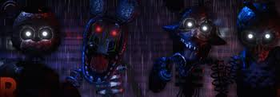

THE JOY OF CREATION
desenvolvedor: niksonhistoria
Jogue através dos olhos de Scott Cawthon e sua família, enquanto eles tentam sobreviver dentro de suas próprias casas na noite terrível que trouxe o horror à realidade, os seres chamuscados cuja origem e motivos ainda são desconhecidos. Encontre os segredos escondidos na casa e descubra os eventos misteriosos que levaram ao cancelamento do próximo jogo da série.jogabilidade
Você joga como Nick Cawthon , Val Cawthon , Michael Schmidt e Scott Cawthon . Existem 5 níveis, chamados Memórias Esquecidas, neste jogo. Sua primeira lembrança está no quarto onde você interpretará Nick. Você enfrentará desafios no quarto que são muito difíceis de aprender na primeira tentativa. A segunda lembrança está na sala , onde você joga como Val. Depois, na terceira memória, o escritório , você joga como Scott Cawthon. A quarta memória é o porão , onde você joga como Michael. A memória final está no sótão , onde você joga mais uma vez como Scott Cawthon. Você começa a noite com Michael contando como afastar The Ignited , com cada noite contendo o elenco principal do primeiro jogo: Ignited Freddy , Ignited Bonnie , Ignited Chica e, por último, Ignited Foxy . As únicas exceções são os níveis do porão e do sótão de um grupo de The Fallen ; quem são os endoesqueletos dos inflamados. Você deve usar a audição, as habilidades de turismo e (às vezes) pura sorte para sobreviver até as 6h. Se o jogador completar os níveis da forma mais eficiente possível, a duração de cada um deles separadamente é em média de 10 minutos no total, e cerca de 50 minutos com os níveis juntos. desenvolvimento
Nikson iniciou o desenvolvimento de The Joy of Creation: Story Mode em junho de 2016, após The Joy of Creation: Reborn. O objetivo desde o início era criar 5 níveis com características próprias e originais, algo completamente diferente de qualquer fan game de FNaF oferecido na época, mas mantendo o estilo "cinco noites". A Sala de Estar foi o primeiro nível a ser trabalhado. Em 3 de setembro, Living Room ainda não estava terminado, e Nikson estava com dúvidas de que o jogo algum dia iria aparecer e explodir em popularidade, e quase acabou cancelando-o devido a limitações de tempo muito além de seu controle. Ele teve que descartar a maioria das ideias originais para cenas e finais múltiplos para o jogo apenas para mantê-lo funcionando. A primeira demo que ele lançou do jogo foi The Living Room Demo, em 17 de setembro de 2016. Estava extremamente cheia de bugs e Nikson tentou o melhor que pôde para consertá-lo. Em outubro de 2016, Nikson começou a trabalhar no segundo nível, Quarto . O menu do jogo completo foi revelado em novembro de 2016. Outro hiato ocorreu a partir de então até que finalmente a segunda demo foi lançada em 2 de março de 2017, apresentando Sala de Estar, Quarto, menu e 3 cenas. Ele veio com um arquivo .sav e um guia passo a passo sobre como pular a Sala de Estar se ela fosse imbatível, o que só era possível de vencer por sorte total na maioria das vezes devido aos bugs. Pouco depois desta atualização, Nikson percebeu que o upload de demos estava na verdade prejudicando o jogo, e Phisnom, seu conselheiro para o jogo completo, interveio e o ajudou bastante. Então ele decidiu não enviar mais demos até que o jogo terminasse, o que deixou os fãs esperando por um longo tempo até que ele começasse a enviar teasers um por um em seu canal no YouTube . O jogo foi lançado em 17 de julho de 2017. Com o passar do tempo, mais e mais YouTubers começaram a jogá-lo, o que aumentou ainda mais sua popularidade. Os patches 1 e 2 foram lançados em 18 de julho de 2017, e um terceiro e último patch veio alguns dias depois para finalizar o jogo de maneira adequada. Essas atualizações causaram pequenas correções no jogo. O Patch 2 teve a maior mudança na jogabilidade, removendo Bonnie da possibilidade de matar o jogador no Office . e se tornou spin-off oficial de five nights at fredys